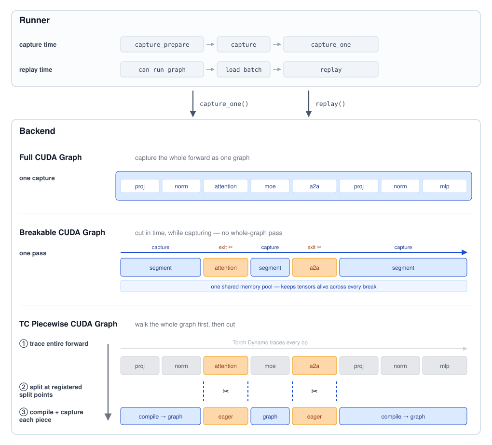
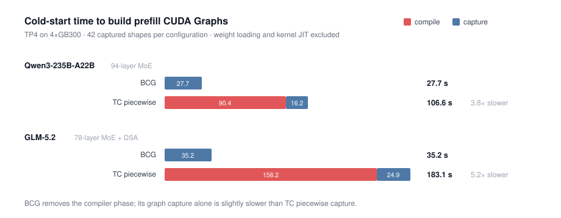
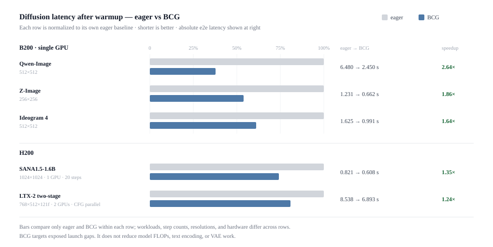
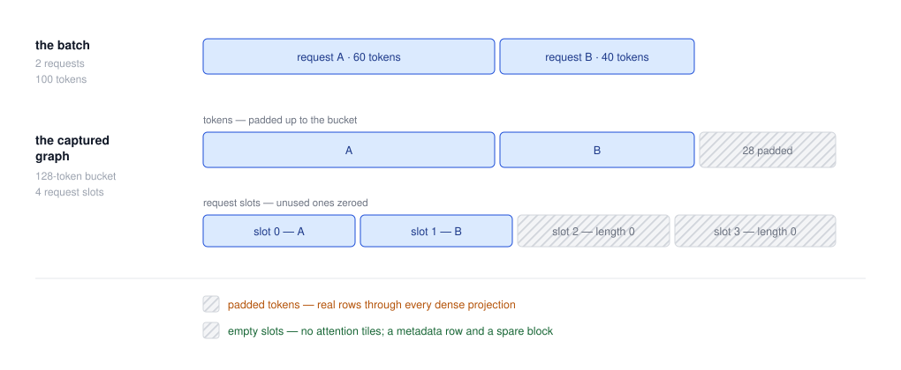
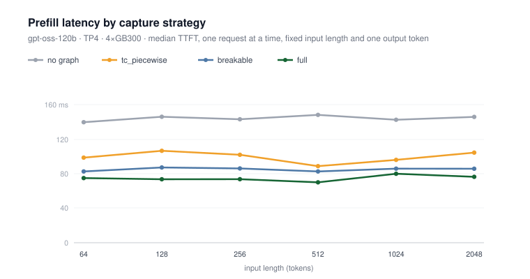
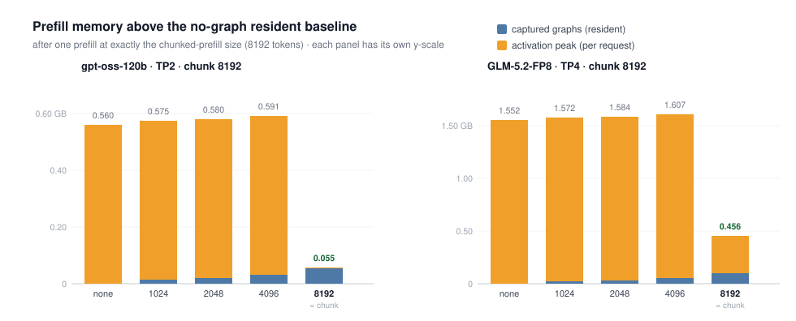

Advanced CUDA Graph Techniques in SGLang
On this page
- TL;DR
- Background
- CUDA Graph in SGLang: the Runner/Backend Split and Flexible Combinations
- Full CUDA Graph
- Breakable CUDA Graph
- TC piecewise CUDA Graph
- Breakable CUDA Graph: Eager Breaks without a Compiler
- Origin and Open-Source Lineage
- Design and Mechanism
- Benefits
- BCG in Diffusion
- Full CUDA Graph for Prefill
- Making prefill static
- What does the padding cost?
- Prefill benchmark
- Memory Footprint of CUDA Graphs
- Reuse inside a segmented capture
- Capture through the chunked-prefill size
- BCG as a Standalone Library
- Acknowledgments
TL;DR
CUDA Graphs promise to remove kernel-launch overhead, but getting close to that benefit in a real inference engine requires graphing as much of the workload as possible without sacrificing compatibility, startup time, or memory.
In SGLang, we refactored CUDA Graph support around a common runner/backend interface, making different capture strategies reusable across execution paths. Breakable CUDA Graph (BCG) is an SGLang-originated serving technique: it was first proposed, named, implemented, and open-sourced in SGLang, with the first implementation published in [#19102] on February 21, 2026, and the prefill extension merged in [#22218] on April 24, 2026. SGLang also pioneered full CUDA Graph support for prefill with the FA4 and FlashInfer attention backends. We also dive deeper into CUDA Graph memory management, including memory reuse across shapes and graph segments, which is becoming an increasingly important part of SGLang’s overall memory management.
For prefill, Breakable CUDA Graph is now SGLang’s default. It reaches
the same segmented execution as the torch.compile-based
piecewise backend in roughly a quarter of the code (521 versus 1,771
lines), builds prefill graphs 3.8–5.2× faster because no compilation is
involved, and has broader coverage for complex functionality naturally.
Full CUDA Graph for prefill goes further, using request padding to
capture the whole forward even for dynamic prefill workloads. Measured
on prefill alone, BCG is 1.70× faster than eager execution and full
capture reaches 1.93×.
Background
An inference step is not a single kernel but a sequence of many GPU operations. In modern LLM serving engines, repeatedly launching these operations from the CPU can introduce noticeable overhead, especially for latency-sensitive workloads. CUDA Graph reduces this overhead by recording the GPU work once and replaying it with much lower launch overhead.
But applying CUDA Graphs effectively in a modern inference engine is not straightforward. The graph design must fit different execution phases, remain compatible with complex kernels and runtime-dependent behavior, and control the capture-time and memory overhead introduced by the graphs themselves. As inference stacks become more complex, proper CUDA Graph integration becomes increasingly important.
This post walks through how CUDA Graph support is built in SGLang and what we changed:
- CUDA Graph in SGLang: the Runner/Backend Split and Flexible Combinations
- Breakable CUDA Graph: Eager Breaks without a Compiler
- Full CUDA Graph for Prefill
- Memory Footprint of CUDA Graphs
- BCG as a Standalone Library
CUDA Graph in SGLang: the Runner/Backend Split and Flexible Combinations
Before this refactor, CUDA Graph support had grown around individual execution paths. Decode, prefill, and speculative decoding each had their own CUDA Graph runners, with overlapping logic for capture shapes, static buffers, replay, and graph configuration. As more execution modes and capture strategies were added, this duplication made it harder to reuse infrastructure and made CUDA Graph-related server arguments increasingly ambiguous.
The refactor [#23906] separates these responsibilities into two layers. A runner manages the execution-specific state needed for capture and replay: captured shapes, static input buffers, attention metadata, and the padding of live batches into captured shapes. A backend determines how that execution is captured, whether as one full graph, a sequence of breakable segments, or compiler-generated pieces.
Because runners depend only on a common backend interface, each execution path can choose its capture strategy independently. Prefill and decode have separate runners, and speculative decoding adds more: the EAGLE draft, draft-extend and frozen-KV MTP draft steps each get their own runner built on the decode runner, while target verify is the decode runner itself, capturing more than one token per request.

The runner prepares each execution path for capture and replay, while the backend determines how the forward is turned into replayable graphs: as one full graph, segmented during capture, or traced and split before capture.
Full CUDA Graph
The full backend captures one torch.cuda.CUDAGraph for
each selected shape, with no eager regions and the fewest replay-time
launches of the three backends. This works naturally for decode: each
request contributes one token, so the primary shape variable is batch
size, which can be covered by a set of captured batch-size buckets.
Prefill varies along more dimensions and is therefore harder; we discuss
it in its own section.
Breakable CUDA Graph
Breakable CUDA Graph (BCG) captures graph-safe regions while allowing
selected operations to run eagerly between graph segments. An
incompatible operation can be marked with @eager_on_graph;
capture stops before the marked function and resumes afterward,
producing a sequence of CUDA Graph segments separated by eager
regions.
Unlike compiler-based piecewise capture, these breaks are inserted directly during capture rather than discovered by tracing the full model first. We discuss the mechanism and why SGLang moved to this design in the next section.
TC piecewise CUDA Graph
The third backend reaches similar segmentation through a compiler.
torch.compile traces the forward with
fullgraph=True, the resulting FX graph is split at
registered split points, and each piece is compiled and captured on its
own. It was SGLang’s first answer to partial CUDA Graph capture and
still ships for platforms where breakable capture has not been
validated.
Breakable CUDA Graph: Eager Breaks without a Compiler
CUDA Graph traditionally requires the captured region to be fully graph-compatible. In practice, modern inference workloads contain operations that cannot be captured directly. Prefill attention is a common example: some attention backends depend on runtime metadata and host-side preparation. A single incompatible operation can therefore prevent CUDA Graph from covering a much larger part of the forward.
SGLang introduced and first open-sourced Breakable CUDA Graph (BCG) to make capture more flexible. Rather than tracing the whole forward with a compiler, BCG inserts explicit eager breaks while capture is in progress: selected operations run eagerly, while capture resumes for the graph-compatible regions around them. At a high level, the forward becomes a sequence of CUDA Graph segments connected by explicit eager breaks.
Origin and Open-Source Lineage
BCG originated in SGLang. Its development is recorded in a public, chronological source history:
- February 21, 2026: SGLang published the first BCG
implementation. The initial
commit of #19102
already contained
BreakableCUDAGraph, an eager-break decorator, and the runtime machinery to end and resume CUDA Graph capture. The PR merged on April 11. - April 2026: SGLang extended BCG to prefill. #22218, explicitly based on #19102, built BCG into a compiler-free breakable piecewise backend for prefill and merged on April 24. BCG subsequently became SGLang’s default prefill CUDA Graph strategy.
The originality claim here is specific to this runtime breakable capture/replay mechanism for open-source LLM serving: SGLang proposed, named, implemented, and open-sourced the mechanism before it was adopted elsewhere. It is not a claim that the broader concepts of graph segmentation or eager fallback had no prior art.
Design and Mechanism
CUDA Graph works best when replay follows a fixed sequence of GPU operations without host participation. Real inference forwards, however, contain operations that do not fit naturally inside that model: attention backends may plan from live sequence lengths, collectives may involve runtime coordination, and serving features may update state dynamically.
Giving up on CUDA Graph whenever one such operation appears would
leave much of the forward uncaptured. BCG instead lets developers mark
the incompatible region directly with @eager_on_graph.
During capture, the current graph segment is closed when execution
reaches the marked function, the function runs eagerly, and capture
resumes afterward in a new segment.
At replay time, the recorded graph segments and eager functions run in the same order. During capture the marked function is run once between graph segments, and the tensor it returns is retained as a persistent boundary buffer, so its device address stays fixed; the following segment is captured against that address. On every replay the eager function runs normally and returns a fresh tensor, which BCG copies into the retained buffer, so the next segment reads the updated value from the address it was originally captured with. BCG never inspects or traces the operations inside the eager region: they only need to execute correctly.
From a functionality perspective, BCG and the earlier torch-compile-based piecewise backend produce the same kind of replayable structure: CUDA Graph segments separated by eager regions. The key difference is how that structure is constructed. TC piecewise first asks the compiler to understand the full forward and then splits the resulting graph. BCG places the splits directly while capture is happening.
Benefits
Faster startup. For compiler-based piecewise graphs,
compilation — not capture — dominates setup: torch.compile
accounts for 78–86% of the time spent preparing prefill graphs, and it
grows with model complexity, reaching 90 seconds on a 235B MoE and 158
seconds on GLM-5.2. BCG removes that phase entirely, reaching segmented
execution in a single capture pass.

Time to build the prefill CUDA Graphs, 42 captured shapes, TP4 on 4×GB300.
The compilation overhead was also visible in day-to-day development. In our CI setup at the time, compilation was often repeated across test runs, making CUDA Graph tests noticeably slower. Better caching could mitigate this, but removing the compiler from the capture path also removed this extra source of complexity from the development loop.
Broader compatibility. SGLang relies heavily on
custom CUDA, Triton, and JIT-compiled kernels that are not native
PyTorch operators. To make these kernels visible to
torch.compile, we often had to wrap them through
torch.library and provide fake implementations for tracing.
This introduced compiler-specific scaffolding throughout the kernel
stack.
More importantly, the compiler also constrained where graph boundaries could be placed. Inputs and outputs crossing a registered operator boundary had to be representable by the compiler. When the natural boundary involved more specialized runtime state or return types, we sometimes had to search for a different cutting point or enlarge the eager region simply to expose an interface the compiler could handle. As the serving stack grew, the compiler boundary increasingly influenced the structure of code that was otherwise unrelated to compilation.
BCG removes this constraint at eager breaks: the graph system does not need to understand how the marked function is implemented or trace through its internals, allowing graph boundaries to follow serving logic rather than compiler tracing and type requirements. As CUDA Graph had to coexist with DP attention, MoE all-to-all backends, LoRA, PD disaggregation, hierarchical cache, deterministic inference, and other rapidly evolving features, making CUDA Graph work increasingly started to feel like a torch.compile integration project. New kernels often meant custom-op registrations and fake implementations, while new features could force us to move graph boundaries simply to satisfy the compiler. With BCG, incompatible regions can remain ordinary eager execution, substantially reducing this compiler-specific engineering overhead.
Debuggable by construction. A captured CUDA Graph replays as an opaque unit: ordinary Python does not execute inside it, which makes prints, assertions, and step-by-step inspection difficult. BCG naturally leaves eager regions where normal Python still runs on every replay.
SGLang extends this idea with --debug-cuda-graph [#19102],
which effectively wraps the whole forward in an eager break. The model
then executes eagerly while still going through the CUDA Graph runner,
static buffers, replay path, and metadata preparation. This provides a
useful debugging boundary: if the problem remains, it is likely in the
model or runner path; if it disappears, capture itself becomes the
primary suspect.
BCG in Diffusion
BCG has also been adopted by SGLang’s diffusion stack [#27436]. Diffusion repeatedly executes the same DiT forward during denoising, making CUDA Graph especially useful when those forwards contain many small, launch-bound kernels.
- Capture the real serving shapes. Resolution, video frame count, prompt-conditioning length, CFG mode, and the selected transformer can all affect the capture signature. We warm up the shapes that are actually served and fall back to eager execution for unseen signatures.
- Break around dynamic operations. Operations such as
dynamic attention and runtime-dependent metadata preparation remain
eager, while BCG captures the stable computation around them without
requiring
torch.compileto understand the full DiT forward. - Exploit repeated denoising structure. Diffusion repeatedly executes the same DiT structure across denoising steps. BCG captures the stable regions once and replays them throughout the denoising loop, while dynamic regions remain eager.
This is particularly effective when execution is launch-bound. For example, after warmup, Qwen-Image at 512×512 on a single B200 improves from 6.48 s to 2.45 s end-to-end latency, and Z-Image improves from 1.231 s to 0.662 s.

End-to-end latency after warmup. Each bar pair uses the same model workload and seed.
The broader lesson is that BCG removes launch overhead; it does not reduce model FLOPs or make compute-bound kernels cheaper. Its advantage is largest when exposed launch gaps are a meaningful fraction of execution time.
Full CUDA Graph for Prefill
Full CUDA Graph is straightforward for decode because each request contributes one token: the main varying dimension is batch size. Prefill is harder because a batch varies in two dimensions at once — the total number of tokens and the number of requests those tokens belong to — while a captured graph requires both to remain fixed. Together with attention backends that depend on runtime metadata, this made full CUDA Graph difficult to apply to prefill and was one of the main reasons we adopted Breakable CUDA Graph there.
More recently, we found ways to make prefill execution sufficiently static for full CUDA Graph [#27988], including restructuring how request slots and attention metadata are represented so that supported attention backends no longer have to remain outside the graph.
Making prefill static
SGLang fixes the token dimension with token buckets. A live batch is padded to the nearest captured token count, much like decode pads batch size to a captured bucket.
The request dimension is handled separately. Each captured graph reserves a fixed number of request slots. Live requests occupy the first slots; unused ones are rewritten as zero-length sentinels, with zero sequence and extend lengths and offsets parked after the real tokens. If a batch contains more requests than the graph has slots, it falls back to eager execution.

At replay, tokens are padded to the captured bucket while unused request slots are filled with zero-length sentinels.
The sentinel metadata must be rewritten on every replay because the captured graph still reads the entire request table. Attention metadata is likewise rebuilt outside the graph for the padded batch before replay. Today, full prefill capture therefore requires attention backends that support this style of metadata preparation, including FlashAttention and FlashInfer.
What does the padding cost?
The two forms of padding have very different costs.
Padded tokens are real work. They become actual rows in the captured batch and therefore pass through dense projections as part of the same GEMMs. SGLang carries the true token count separately, allowing MoE routing, attention, and linear-attention kernels to skip much of the padded region, but dense computation still pays for those extra rows.
Empty request slots are much cheaper. In FlashAttention’s variable-length scheduler, work is derived from each sequence’s actual length rather than assigning a fixed amount of computation to every request slot. A zero-length request therefore contributes essentially no attention work; it mainly adds metadata and a small amount of scheduling overhead.
This asymmetry is important: token padding is the expensive dimension, while request-slot padding is comparatively cheap.
Full prefill capture is still an experimental feature. It has to be
enabled explicitly — the engine warns that full is
experimental and points to breakable or tc_piecewise for production
workloads — and it currently works mainly on the FlashAttention (fa4)
and FlashInfer backends, which are the ones that build extend-mode
metadata the way the captured path needs. Broadening backend support and
tuning the bucket and slot choices is still ahead of us.
Prefill benchmark
With three ways to capture prefill and an eager baseline, the remaining question is what each one costs at replay. Measuring prefill on its own — a fixed input length with a single output token, one request at a time, decode graphs disabled in every arm — on gpt-oss-120b (TP4, 4×GB300), where all four paths run: full capture is 1.93× faster than eager, BCG 1.70×, and TC piecewise 1.45×, so BCG is also 17% faster than the compiler-based backend at replay, not only at build time. The gap comes from what each one does per forward: BCG replays its recorded segments directly, while TC piecewise calls back into the compiled callable every time, paying Torch Dynamo’s guard checks and dispatch before its own captured pieces run. On GLM-5.2 only BCG can capture at all — TC piecewise cannot trace the forward and full capture has no path for its sparse attention — and it is 1.60× over eager there. Every curve is flat across a 32× range in prompt length, which is the signature of launch overhead rather than compute.

Prefill-only latency on gpt-oss-120b, where all four backends run.
Memory Footprint of CUDA Graphs
Memory poses two separate challenges: keeping a segmented capture from multiplying resident memory, and capturing far enough that resident graph memory actually replaces the worst eager activation peak.
Reuse inside a segmented capture
A segmented backend could easily multiply graph memory: every captured shape contains multiple graph segments, and each segment has intermediates that must remain valid for replay. BCG avoids that multiplication through three forms of reuse.
- One shared memory pool across segments. Every segment for a captured shape uses the same CUDA Graph pool, allowing intermediate storage to be reused rather than pinned separately for each segment.
- Weak references at eager breaks. Tensors passed into a break are held weakly when the graph pool already owns their storage, avoiding unnecessary Python references that would extend tensor lifetimes. The tensor weak-reference technique comes from vLLM [#9724], which introduced it so that captured graphs could share output buffers instead of each pinning its own.
- One output buffer across capture sizes. Capture sizes share a single maximum-sized output buffer, sliced to the rows needed by each shape, instead of allocating one output buffer per shape.
One value cannot be treated this way: the tensor that carries data across an eager break. The next graph segment is captured against its address, so that buffer must stay alive and be updated in place on every replay.
With these reuse mechanisms, even a large capture table remains modest: 42 shapes across a 78-layer MoE add 2.4 GB of graph memory on GLM-5.2.
Capture through the chunked-prefill size
CUDA Graphs change the shape of prefill memory usage. Graph memory is resident: it is allocated during capture and remains for the lifetime of the server. Eager activations are transient: each prefill allocates working memory, and the largest supported prefill determines the peak.
Capturing a prefill shape moves much of that transient working set into the graph’s resident memory pool. But this only helps for shapes that actually replay a graph. If the capture ladder stops below the maximum prefill size, the largest prefill still falls back to eager execution and retains the original activation peak — while the server also pays for all of the resident graphs below it.
This makes the capture ceiling more important than the number of
captured shapes. Since chunked_prefill_size bounds the
largest single prefill forward, capturing through that size removes the
worst eager activation peak.

Prefill memory above the no-graph resident baseline, measured after one prefill at exactly the chunked-prefill size.
Ceilings below the chunk size sit slightly above the no-graph baseline: they add resident graphs while the activation peak stays exactly where it was. Once the ceiling reaches the chunk size, the largest prefill finally replays a graph and that peak collapses — to essentially nothing on gpt-oss-120b (0.56 GB to 0.001 GB), and from 1.55 GB to 0.35 GB on GLM-5.2, whose sparse-attention indexer still runs eagerly at a break.
Capturing through the chunked-prefill size buys two things:
- Lower total memory. The activation peak stops being paid per request, and the total lands below the no-graph baseline — 0.51 GB lower on gpt-oss-120b, 1.10 GB on GLM-5.2. Modest against a footprint of a few hundred gigabytes, but a saving rather than a cost.
- Predictable memory usage. A workload-dependent activation spike becomes a fixed allocation established at capture time. The engine can account for that memory up front instead of reserving headroom for a transient peak that appears only during large prefills.
BCG as a Standalone Library
The breakable capture mechanism itself is not only tied to SGLang, so
in collaboration with the Meta PyTorch team we have factored it out into
a standalone library: meta-pytorch/breakable-cuda-graphs.
It exposes the same capture model behind a small PyTorch-style API: a
breakable_graph(...) context manager analogous to
torch.cuda.graph, a @no_graph decorator that
marks functions to run eagerly between graph segments, and a
CUDAGraphSequence that replays the captured segments and
eager regions in order. If no eager break occurs inside the context, the
block is captured as a single graph segment — the standard CUDA Graph
pattern falls out as the trivial case.
If your system needs partial CUDA Graph capture — in another inference engine, a training loop, or a research prototype — you can use the library directly for academic or industry work without adopting SGLang’s runner stack. SGLang will continue to develop the mechanism, and we expect the standalone library and the in-tree implementation to converge over time.
Acknowledgments
This work was a collaboration between the SGLang team and the Meta team.
SGLang: Yuwei An*, Cheng Wan, Xiaoyu Zhang, Mick Qian, Baizhou Zhang, Yusheng Su, Ke Bao
Meta: Shiyang Chen*, Lianmin Zheng
We also thank the NVIDIA, AMD, Thinking Machines Lab, and Meta PyTorch teams for their help along the way.
(* Equal contribution)